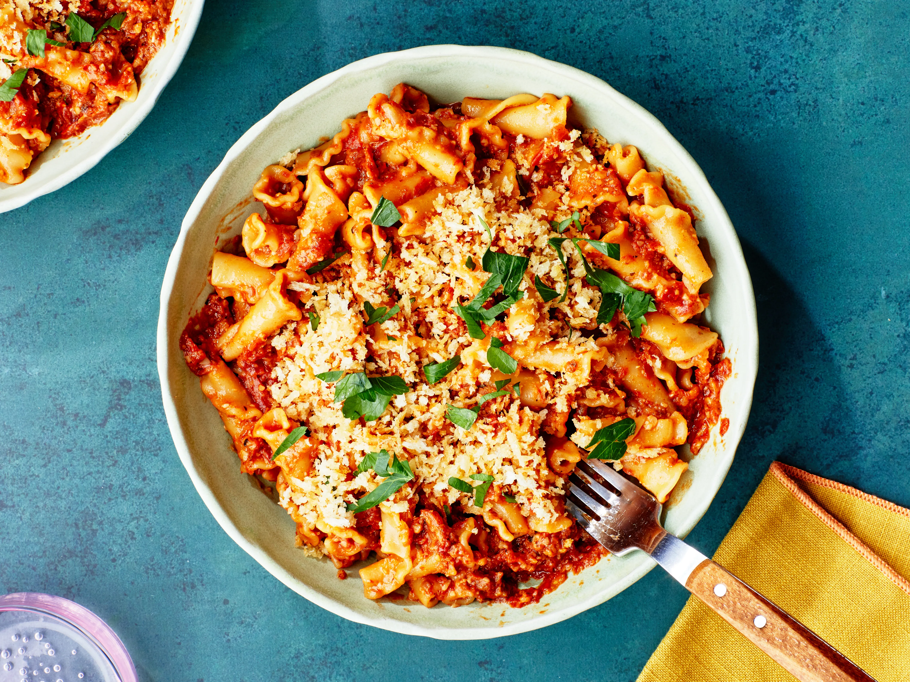

Home

Pasta Recipe
Ingredients:
- 250g pasta
- 2 cups marinara sauce
- 1/2 cup grated Parmesan cheese
- 1/4 cup chopped fresh basil
- Salt and pepper to taste
Instructions:
- Boil pasta according to package instructions until al dente. Drain.
- Heat marinara sauce in a saucepan over medium heat.
- Add cooked pasta to the saucepan and toss until well coated.
- Serve hot, topped with grated Parmesan cheese and chopped fresh basil. Season with salt and pepper to taste.